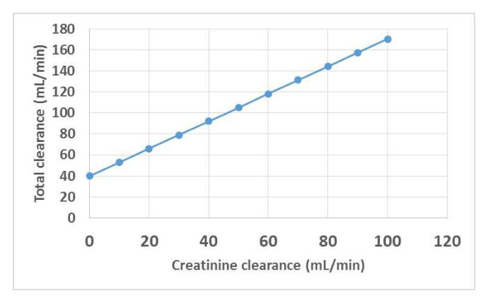
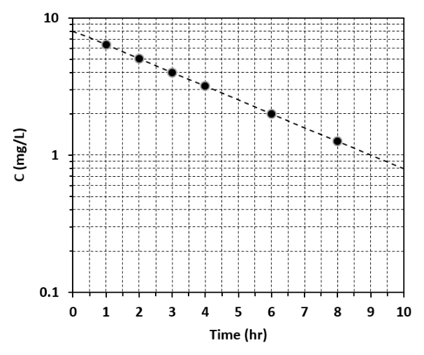

開卷有益 ／
藥師 ／ 藥劑學與生物藥劑學 ／ 111 年第 1 次111 年第 1 次藥師藥劑學與生物藥劑學試題與答案
這一頁是民國 111 年第 1 次藥師藥劑學與生物藥劑學的整份歷屆試題，共 80 題，題目與標準答案出自考選部「國家考試試題及測驗式試題答案」開放資料，其中 76 題附有詳解。以下逐題列出題幹、選項與答案；要計時作答或記錄成績，請用線上練習。
考選部原始場次代碼：111020
線上作答這一科 →
全部 80 題
第 1 題
藥品的預配方研究（preformulation studies）不包含下列那一項？
（A） 藥品溶解度（B） 油水分配係數（C） 安定性（D） 生體可用率答案：（D）
詳解與考點 正解：預配方研究是在配方設計之前取得原料藥的理化性質與安定性資料，以預測製劑可行性。生體可用率須在製劑完成並給藥後評估，不屬原料藥的 preformulation studies，故選 D。
A：藥品溶解度會影響鹽型、劑型與溶出設計，是預配方研究的基本量測，故不符合「不包含」。
B：油水分配係數用於評估親脂性，並可協助判斷溶解、分配與吸收設計，因此屬預配方資料。
C：安定性研究用來辨識光、熱、水分或氧化對原料藥的影響，是預配方的重要項目。
本題考點：預配方研究（preformulation studies）——處方形成前先量測原料藥的溶解度、分配性與安定性；生體可用率（bioavailability）——需比較給藥後進入全身循環的程度與速率，屬製劑或生物藥劑學評估而非原料藥前期理化篩選。
第 2 題
一般藥物當溶解度小於若干mg/mL 時，其吸收較差？
（A） 200（B） 100（C） 50（D） 10答案：（D）
詳解與考點 正解：一般口服藥物必須先在腸液中溶解才能通過腸道膜；當溶解度低於 10 mg/mL，溶離容易成為吸收限制步驟。因此（D）10 mg/mL 是題目所問的低溶解度界線，故選 D。
A：200 mg/mL 遠高於低溶解度的界線，通常不會僅因溶解度不足而造成吸收較差。
B：100 mg/mL 仍有足夠的溶解能力，不能作為本題所稱吸收容易受溶離限制的判準。
C：50 mg/mL 雖低於前兩項，但仍高於 10 mg/mL 的界線，並非此題的答案。
本題考點：溶解度限制吸收（dissolution-limited absorption）——口服藥物若在腸液中的溶解量不足，先判斷溶離是否已成為吸收的瓶頸；生體可用率（bioavailability）——吸收不佳不只看膜通透性，溶解度過低時要先處理藥物進入溶液相的能力。
第 3 題
若藥物具非線性藥動學（non-linear pharmacokinetics）特性，當藥物劑量增加時，下列敘述何者正確？
（A） Vmax不成比例增加（B） 半衰期不變（C） AUC 不成比例增加（D） 清除率成比例增加答案：（C）
詳解與考點 正解：非線性藥動學（non-linear pharmacokinetics）的關鍵是藥物濃度改變時，清除能力或吸收等過程不再維持固定比例。劑量增加後，AUC 不會再與劑量維持正比；常見的代謝飽和情況下，AUC 甚至會超比例上升，因此（C）正確，故選 C。
A：Vmax 代表酵素或轉運系統的最大處理能力，主要由系統容量決定，不會因單純增加給藥劑量而成比例增加。
B：非線性消除時，表觀半衰期可能隨濃度改變；接近飽和時消除變慢，不能假設半衰期不變。
D：清除率在線性藥動學才可視為常數；若代謝途徑飽和，濃度升高時清除率反而常下降，不會成比例增加。
本題考點：非線性藥動學（non-linear pharmacokinetics）——看到劑量改變後濃度或 AUC 不成比例，就要檢查清除率、吸收或蛋白結合是否隨濃度改變；飽和代謝（capacity-limited metabolism）——接近 Vmax 時增加劑量會使消除相對變慢，AUC 常出現超比例增加。
第 4 題
某抗生素於成人之半衰期為0.5 hr，於新生兒為6 hr，若成人劑量為4 mg/kg Q4H，當此藥用於5 kg 新生兒時， 則應如何給藥最適當？
（A） 10 mg Q12H（B） 20 mg Q36H（C） 10 mg Q24H（D） 20 mg Q24H答案：（C）
詳解與考點 正解：新生兒半衰期由 0.5 h 延長至 6 h，表示在題目未顯示 Vd 改變的前提下，清除率降為原來的 1/12。先換算 5 kg 個體依成人體重劑量的單次量：4 mg/kg × 5 kg = 20 mg；原給藥速率為 20 mg / 4 h = 5 mg/h。半衰期比值為 6 h / 0.5 h = 12，依 t½ = 0.693 × Vd / CL，維持相同平均濃度所需速率為 5 mg/h / 12 = 0.417 mg/h。（C）10 mg / 24 h = 0.417 mg/h，故選 C。
A：10 mg / 12 h = 0.833 mg/h，是目標速率 0.417 mg/h 的 2 倍，對清除明顯變慢的新生兒仍過量。
B：20 mg / 36 h = 0.556 mg/h，仍高於依半衰期延長所需的 0.417 mg/h，未充分反映清除率降為 1/12。
D：20 mg / 24 h = 0.833 mg/h，同樣是目標速率的 2 倍；只拉長投藥間隔而保留過高單次量不足以符合本題的總給藥速率。
本題考點：半衰期與清除率（half-life and clearance）——在 Vd 不變時，t½ 與 CL 成反比，半衰期延長幾倍就先把清除率視為降至相應分率；維持平均穩態濃度（average steady-state concentration）——比較不同給藥方案時，以 D/τ 對應清除率的改變，而非只比較單次劑量。
第 5 題
已知某抗生素半衰期為12 小時，當以IV bolus 每8 小時給與96 mg 時，其穩定狀態最高與最低血中濃度之差值 為8 mg/L，若生理狀態沒改變，投藥改為240mg Q12H，則其穩定狀態最高與最低血中濃度之差值為若干 mg/L？
（A） 12（B） 14（C） 18（D） 20答案：（D）
詳解與考點 正解：重複 IV bolus 給藥在穩定狀態時，Cmax,ss - Cmin,ss = D/Vd；給藥間隔與半衰期會影響最高、最低濃度各自的值，但在兩者相減時會抵銷。由原方案求得 Vd = 96 mg / 8 mg/L = 12 L。改用 240 mg 後，濃度差 = 240 mg / 12 L = 20 mg/L，故選 D。
A：12 mg/L 是把給藥間隔由 8 h 改為 12 h 的比例直接套到濃度差；此差值依 D/Vd 計算，τ 不在式中。
B：14 mg/L 不符合 Vd 固定時 240 mg / 12 L 的結果。劑量由 96 mg 增至 240 mg，濃度差必須隨劑量增加為原來的 2.5 倍。
C：18 mg/L 把半衰期或投藥間隔對個別峰、谷濃度的影響混入濃度差。半衰期會改變 Cmin,ss/Cmax,ss 的比值，卻不改變 D/Vd。
本題考點：IV bolus 穩態濃度差（steady-state peak-trough difference）——反覆靜脈推注且 Vd 固定時，以 Cmax,ss - Cmin,ss = D/Vd 直接求峰谷差；分布容積（volume of distribution）——已知單次劑量與濃度差時，可先用 Vd = D/ΔC 回推，再代入新劑量。
第 6 題
某病人每隔12 小時口服投與A 藥 300 mg，已知其半衰期為5 小時，當其腎功能減退，半衰期延長為10 小 時，下列敘述何者最適當？
（A） 生體可用率下降（B） 如劑量不變，則投藥間隔為6 小時（C） 治療所需之血中藥物濃度應減半（D） 若投藥間隔不變，則劑量為150 mg答案：（D）
詳解與考點 正解：腎功能減退後半衰期由 5 h 延長為 10 h，依 t½ = 0.693 × Vd / CL，在 Vd 不變下可判斷清除率減半。平均穩態濃度為 Css,avg = F·D/(CL·τ)；若維持原本的 τ = 12 h 與相同目標濃度，劑量也應減半：300 mg × 1/2 = 150 mg。因此（D）最適當，故選 D。
A：腎功能減退主要影響排除，題目沒有顯示吸收過程改變，不能據此推論生體可用率下降。
B：300 mg Q6H 的給藥速率為 300 mg / 6 h = 50 mg/h，原方案僅為 300 mg / 12 h = 25 mg/h；在清除率已減半時縮短間隔會使血中濃度上升更多。
C：治療目標濃度不會因腎功能下降而自動減半。調整劑量或間隔的目的，是維持原先有效且安全的血中濃度。
本題考點：腎功能與維持劑量（renal function and maintenance dose）——半衰期延長而 Vd 不變時，先以 CL 下降判讀維持劑量需求；平均穩態濃度（average steady-state concentration）——F、D、CL、τ 中任一項改變時，用 Css,avg = F·D/(CL·τ) 配平，而非任意改變治療目標。
第 7 題
林先生體重60 kg，每8 小時投與60 mg 的gentamicin 幾乎全由腎排除，當林先生腎功能出現異常，creatinine 清 除率減為原來的1/2，若須維持相同穩定狀態平均血中濃度，劑量調整方式以下列何者最適當？
（A） 45 mg Q12H（B） 20 mg Q8H（C） 60 mg QD（D） 40 mg Q8H答案：（A）
詳解與考點 正解：gentamicin 幾乎全由腎排除，creatinine 清除率減為 1/2 時，可視為藥物清除率也減為 1/2。原方案給藥速率為 60 mg / 8 h = 7.5 mg/h；為維持相同 Css,avg，新速率應為 7.5 mg/h × 1/2 = 3.75 mg/h。（A）45 mg / 12 h = 3.75 mg/h，故選 A。
B：20 mg / 8 h = 2.5 mg/h，低於目標的 3.75 mg/h，平均穩態濃度會低於原方案。
C：60 mg / 24 h = 2.5 mg/h，總給藥速率同樣過低；延長到 QD 並未補足每次劑量。
D：40 mg / 8 h = 5 mg/h，高於清除率減半後所需的 3.75 mg/h，平均穩態濃度仍會偏高。
本題考點：腎清除藥物劑量調整（renal dose adjustment）——主要經腎排除且 CL 隨 creatinine clearance 下降時，先按清除率比例調整 D/τ；平均穩態濃度（average steady-state concentration）——維持相同 Css,avg 的判準是給藥速率與清除率同比例改變。
第 8 題
服用codeine 為止痛劑時，有些人不易或無法達到止痛效果，主要因為具有下列何種代謝酶多型性？
（A） CYP2C9 之extensive metabolizer（B） CYP2D6 之extensive metabolizer（C） CYP2D6 之poor metabolizer（D） CYP2C9 之poor metabolizer答案：（C）
詳解與考點 正解：codeine 的止痛作用有賴 CYP2D6 將其 O-demethylation 為 morphine。CYP2D6 poor metabolizer 的轉化能力低，產生的 morphine 不足，因此容易出現止痛效果不佳或無效，故選 C。
A：CYP2C9 extensive metabolizer 與 codeine 活化為 morphine 的主要途徑無關，不能解釋止痛不足。
B：CYP2D6 extensive metabolizer 代表該活化途徑功能正常，通常能形成足量的活性代謝物，方向與題意相反。
D：CYP2C9 poor metabolizer 影響的是 CYP2C9 受質的代謝能力，不是 codeine 轉為 morphine 的關鍵步驟。
本題考點：前驅藥活化（prodrug activation）——遇到藥效不足時，先確認原型藥是否需經代謝才形成活性代謝物；藥物基因體學（pharmacogenomics）——CYP2D6 poor metabolizer 使用 codeine 時，應以活性代謝物生成不足判讀療效下降。
第 9 題
下列何者對於dihydropyrimidine dehydrogenasepoor metabolizer 病人，會使藥物血中濃度升高而易產生副作用？
（A） 5-flourouracil（B） sulfonamide（C） warfarin（D） mercaptopurine答案：（A）
詳解與考點 正解：dihydropyrimidine dehydrogenase 是 5-fluorouracil 的主要分解代謝酶。其 poor metabolizer 因代謝清除能力不足，5-fluorouracil 容易累積、血中濃度上升並增加毒性風險，因此（A）正確，故選 A。
B：sulfonamide 的個體差異常以 N-acetyltransferase 的乙醯化能力討論，不是 dihydropyrimidine dehydrogenase 缺乏所造成。
C：warfarin 的代謝與作用反應較常涉及 CYP2C9 及維生素 K 循環相關差異，不能用 dihydropyrimidine dehydrogenase poor metabolizer 解釋。
D：mercaptopurine 的毒性風險主要要辨別 thiopurine methyltransferase 或 NUDT15 等代謝差異，與本題酶別不同。
本題考點：DPD 缺乏（dihydropyrimidine dehydrogenase deficiency）——使用 5-fluorouracil 前後若出現不成比例的暴露或毒性，先考慮代謝清除不足；藥物基因體學（pharmacogenomics）——把藥物與其主要代謝酶配對，才能分辨不同基因多型性的高風險藥物。
第 10 題
下列何者最不受肝臟生理狀況之影響，而改變其藥動特性？
（A） antipyrine（B） erythromycin（C） neomycin（D） chloramphenicol答案：（C）
詳解與考點 正解：最不受肝臟生理狀況影響的藥物，應以不依賴肝代謝與膽汁排泄者為優先。neomycin 幾乎不經腸道吸收，吸收後也主要以原形經腎排除，因此肝功能改變對其藥動特性的影響最小，故選 C。
A：antipyrine 主要經肝臟氧化代謝，常用來反映肝臟代謝能力，肝臟生理狀況改變會影響其清除。
B：erythromycin 有顯著的肝臟代謝與膽汁排泄，肝血流、肝細胞功能或膽汁排泄變化都可能改變其藥動特性。
D：chloramphenicol 主要在肝臟進行 glucuronidation，肝功能受損時清除能力可能下降。
本題考點：肝臟清除（hepatic clearance）——判斷肝功能是否影響藥動學時，先看藥物是否需肝代謝或膽汁排泄；腎排除未變化藥物（renally excreted unchanged drug）——主要以原形由腎排除者，相較肝代謝藥物較不受肝臟生理變化影響。
第 11 題
某藥品之total clearance 與creatinine clearance（CLcr）的關係如下圖，依此數據該藥於腎功能正常時（CLcr=100 mL/min）之腎臟排泄分率（fe）約為若干？

（A） 0.75（B） 0.65（C） 0.55（D） 0.45答案：（A）
第 12 題
承上題，由上圖可知該藥renal clearance 與creatinine clearance 的比值（CLR/CLcr）為何？
（A） 1.7（B） 1.3（C） 0.8（D） 0.4答案：（B）
詳解與考點 正解：由圖中直線關係可獨立算出。此圖橫軸為 creatinine clearance（CLcr），縱軸為 total clearance；由於 CL_total = CL_R + CL_NR（CL_NR 為非腎清除，與 CLcr 無關，是常數，即圖形的截距），且腎清除與 CLcr 成正比，故此直線的斜率即為 CLR/CLcr。圖上 CLcr = 0 時 total clearance 約 40 mL/min，CLcr = 100 mL/min 時 total clearance 約 170 mL/min，斜率 = (170 − 40) / (100 − 0) = 1.3，故選 B。
A：1.7 為 170 除以 100 的結果，是把 CLcr = 100 時的 total clearance 直接除以 CLcr，未先扣掉代表非腎清除的截距（40 mL/min）就取比值，方向上把非腎清除也算進了 CLR。
C：0.8 不對應圖上任兩點所定出的斜率，若照圖上端點與截距計算，得不到此值。
D：0.4 為截距 40 除以 100 所得，用的是非腎清除（CL_NR，即截距）而非直線斜率，量錯了要取的量。
本題考點：腎清除率占比（CLR/CLcr）——由 total clearance 對 creatinine clearance 作圖，斜率才是 CLR/CLcr，截距是與腎功能無關的非腎清除（CL_NR）；清除率可加成性（CL_total = CL_R + CL_NR）——腎清除與非腎清除分別可獨立求算，只有斜率反映與腎功能連動的清除效率。
第 13 題
有關醑劑、酏劑及酊劑之敘述，下列何者錯誤？
（A） 皆含有乙醇（B） 醑劑應置於緊密容器貯藏於8～15℃（C） 新鮮生藥製成之酊劑，每100 mL 代表生藥50 g 之效能（D） 劇藥之酊劑，每100 mL 代表藥品10 g 之效能答案：（B）
詳解與考點 正解：本題問錯誤敘述，關鍵在醑劑的貯存條件。醑劑是含揮發性成分的乙醇性或水醇性製劑，應以緊密、避光容器並避免不當受熱為判準；（B）把 8-15°C 當成醑劑的一律貯存規定並不正確，故選 B。
A：醑劑（spirit）、酏劑（elixir）與酊劑（tincture）都是含乙醇的液體製劑，差異在成分來源、甜味與製備目的，不在是否含乙醇。
C：由新鮮生藥製成的酊劑，每 100 mL 代表生藥 50 g 的效能，符合此類酊劑的濃度表示方式。
D：劇藥酊劑每 100 mL 代表藥品 10 g 的效能，是以較低代表量規範高效力製劑的表示方式。
本題考點：含醇液體製劑（alcoholic liquid preparations）——先依是否為醑劑、酏劑或酊劑判斷其成分與用途，再核對個別貯存條件；酊劑濃度表示（tincture strength）——遇到新鮮生藥或劇藥酊劑時，以每 100 mL 所代表的生藥或藥品重量判讀。
第 14 題
下列何者可能含有八乙酸蔗糖酯（sucrose octaacetate）？
（A） 擦拭用酒精（B） 水痘疫苗（C） 日本腦炎疫苗（D） 人類胰島素注射液答案：（A）
詳解與考點 正解：八乙酸蔗糖酯（sucrose octaacetate）味道極苦，可用作變性劑（denaturant）以降低含乙醇產品被誤飲或濫用的可能。因此（A）擦拭用酒精可能含有此成分，故選 A。
B：水痘疫苗是供接種的生物製品，製劑設計不需要以苦味變性劑來防止口服，與八乙酸蔗糖酯的用途不符。
C：日本腦炎疫苗的品質要求著重生物製品的安全性與效力，不以加入乙醇變性用苦味劑作為目的。
D：人類胰島素注射液為注射用製劑，並無防止飲用乙醇的用途，沒有加入八乙酸蔗糖酯的理由。
本題考點：變性劑（denaturant）——看到含乙醇的非飲用產品時，辨認是否可能加入苦味物質以阻止誤飲；八乙酸蔗糖酯（sucrose octaacetate）——其製劑功能是提供強烈苦味，不是疫苗或注射劑的活性成分。
第 15 題
下列何者較無法防止糖漿劑之蔗糖結晶析出？
（A） 甘油（glycerin）（B） 山梨醇（sorbitol）（C） 酒精（ethanol）（D） 甘露醇（mannitol）答案：（C）
詳解與考點 正解：糖漿劑要防止蔗糖結晶，需避免降低蔗糖在溶媒中的溶解能力。ethanol 會使溶媒對蔗糖的溶解能力下降，反而可能促進蔗糖析晶，因此（C）較無法防止結晶，故選 C。
A：glycerin 是多元醇（polyol），可作為糖漿的輔助溶質以干擾蔗糖結晶，具有防止析晶的作用。
B：sorbitol 同為多元醇，可改變糖漿中蔗糖的結晶行為，故可用於降低結晶析出的機會。
D：mannitol 雖與蔗糖不同，但作為多元醇可協助干擾結晶，不能視為比 ethanol 更不適合的選項。
本題考點：糖漿結晶控制（sucrose crystallization control）——糖漿出現結晶時，先判斷添加物會不會降低蔗糖溶解度或促進晶核形成；多元醇（polyol）——glycerin、sorbitol 與 mannitol 等可作為調整糖漿物理安定性的輔助溶質。
第 16 題
已知aspirin 的pKa 為3.5，下列敘述何者最不適當？
（A） 在中性溶液中，aspirin 主要以非離子態存在（B） aspirin 在中性溶液的溶解度比酸性溶液高（C） 要提高aspirin 溶解度，可以藉由提高反應溫度來達到（D） 將aspirin 放在pH 2.5 的水溶液中，離子態所占比例約為10%答案：（A）
詳解與考點 正解：aspirin 是 pKa = 3.5 的弱酸，在中性溶液 pH 約為 7.0 時，Henderson-Hasselbalch 式為 pH = pKa + log([A-]/[HA])，所以 [A-]/[HA] = 10^(7.0 - 3.5) ≈ 3,162，主要應為離子態而非非離子態。因此（A）最不適當，故選 A。
B：弱酸在 pH 高於 pKa 的中性溶液中，離子態比例增加，表觀溶解度會高於酸性溶液，敘述正確。
C：本題比較的是溶解度而非化學安定性；一般而言，提高溫度可提高固態 aspirin 的溶解度，故此敘述並非最不適當。
D：在 pH 2.5 時，[A-]/[HA] = 10^(2.5 - 3.5) = 0.1；離子態分率 = 0.1 / (1 + 0.1) = 0.0909，約為 9.1%，可近似為 10%。
本題考點：弱酸電離（weak-acid ionization）——弱酸遇到 pH 高於 pKa 時，以 A- 形式為主，溶解度通常隨之上升；Henderson-Hasselbalch equation——需要求離子態比例時，先算 [A-]/[HA]，再換成分率而不是把比值直接當百分比。
第 17 題
口服simethicone 乳劑之主要用途為何？
（A） 瀉劑（B） 殺菌劑（C） 胃黏膜保護劑（D） 抗起泡劑答案：（D）
詳解與考點 正解：口服 simethicone 乳劑可降低腸胃道氣泡的表面張力，使小氣泡聚合並較易排出，其主要用途就是抗起泡。因此（D）正確，故選 D。
A：瀉劑是藉由增加腸道水分、刺激蠕動或其他方式促進排便；simethicone 不以改變排便為主要作用。
B：simethicone 的作用位置是氣液界面，沒有以抑制或殺滅微生物作為治療機轉。
C：胃黏膜保護劑以形成保護層或增強黏膜防禦為主；simethicone 只處理氣泡，不直接保護胃黏膜。
本題考點：消泡劑（antifoaming agent）——腸胃脹氣以大量小氣泡為主時，判斷能降低表面張力並促進氣泡合併的藥物；表面張力（surface tension）——藥物若作用於氣液界面，通常改變的是泡沫穩定性而非腸蠕動或抗菌能力。
第 18 題
有關界面活性劑HLB 值大小之比較，下列何者正確？
（A） Span 60＞Span 20（B） Tween 80＞Tween 40（C） Tween 20＞Span 80（D） Span 20＞Tween 80答案：（C）
詳解與考點 正解：HLB 值愈高表示界面活性劑愈親水。Tween 類含有 polyoxyethylene 鏈，通常比 Span 類的 sorbitan 酯親水；因此（C）Tween 20 的 HLB 值高於 Span 80，故選 C。
A：在 Span 類中，Span 60 的脂肪酸鏈較疏水，其 HLB 值低於 Span 20，題述比較方向相反。
B：Tween 40 的 HLB 值略高於 Tween 80，故不能寫成 Tween 80 大於 Tween 40。
D：Span 20 雖比部分 Span 類親水，仍低於含 polyoxyethylene 鏈的 Tween 80，題述比較方向相反。
本題考點：親水親油平衡值（hydrophilic-lipophilic balance, HLB）——比較界面活性劑時，HLB 高者偏親水，較適合作為 O/W 乳化劑；Tween 與 Span（polysorbate and sorbitan ester）——先分辨是否含 polyoxyethylene 鏈，再比較同系列脂肪酸鏈造成的相對親水性。
第 19 題
下列何種流體之特性，最不常出現於一般乳劑？
（A） dilatant flow（B） newtonian flow（C） plastic flow（D） pseudoplastic flow答案：（B）
詳解與考點 正解：一般乳劑是含分散相液滴與界面膜的多相系統，黏度常隨剪切力或內部結構改變，因此非牛頓流動較常見。黏度完全不隨剪切速率改變的 Newtonian flow 最不常出現於一般乳劑，故選 B。
A：dilatant flow 可在分散相濃度高時出現；剪切時粒子由緊密堆積轉為較開放的排列，空隙體積增加而介質不足以填滿，粒子間摩擦上升，表觀黏度可能上升。
C：plastic flow 具有屈服值，乳劑液滴的絮凝或結構化網絡可造成這種流動特性。
D：pseudoplastic flow 會隨剪切速率增加而黏度下降，是乳劑中常見的非牛頓流動表現。
本題考點：乳劑流變學（emulsion rheology）——乳劑若有液滴交互作用或結構化界面膜，先預期可能出現非牛頓流動；牛頓與非牛頓流動（Newtonian and non-Newtonian flow）——黏度是否隨剪切速率改變，是判斷兩者的直接分界。
第 20 題
於投藥肺部之噴霧劑，依中華藥典規定不包括下列何項特性分析試驗？
（A） 原料藥投藥速率（B） 總原料藥投藥量（C） 原料藥投藥體積（D） 氣體動力學評估答案：（C）
詳解與考點 正解：肺部投藥噴霧劑的特性分析著重每次及總共交付的原料藥量、投藥速率，以及粒子能否進入呼吸道的空氣動力學表現。（C）原料藥投藥體積不是這類劑型獨立的特性分析試驗，故選 C。
A：原料藥投藥速率關係到單位時間交付的藥物量，屬肺部投藥噴霧劑需要評估的遞送特性。
B：總原料藥投藥量用以確認容器可交付的總藥物量，屬此類製劑的性能分析範圍。
D：氣體動力學評估可判斷粒子在氣流中的行為及進入肺部的可能性，是吸入製劑的重要試驗。
本題考點：吸入噴霧劑性能試驗（inhalation aerosol performance testing）——判斷試驗項目時，優先看藥物遞送量、遞送速率與可吸入粒子的表現；空氣動力學粒徑分布（aerodynamic particle size distribution）——肺部沉積與粒子的空氣動力學性質相關，不能只用製劑體積判斷。
第 21 題
某劑型品質檢測項目中，包括「投與劑量均一度」、「空氣動力學粒徑分布」等，此劑型最有可能為下列何 種劑型？
（A） 口服懸液劑（B） 注射劑（C） 外用散劑（D） 吸入粉劑答案：（D）
詳解與考點 正解：投與劑量均一度與空氣動力學粒徑分布同時出現，是吸入製劑的典型品質檢測組合。吸入粉劑必須讓每次吸入交付的藥量一致，粒子也要具有可到達肺部的空氣動力學特性，因此（D）最符合，故選 D。
A：口服懸液劑可檢查再分散性與每次取用的均一性，但不以空氣動力學粒徑分布評估肺部沉積。
B：注射劑的重點在無菌、異物與注射用品質等要求，不以吸入時的空氣動力學粒徑分布作為核心檢測。
C：外用散劑也可關心粒徑，但其粒子不以隨吸氣進入肺部為目的，沒有這組吸入遞送的檢測需求。
本題考點：吸入粉劑（dry powder inhaler）——同時看到投與劑量均一度與空氣動力學粒徑分布時，優先判斷為肺部吸入劑型；肺部沉積（pulmonary deposition）——吸入製劑不只要有正確劑量，還要有適當空氣動力學粒徑才能到達目標呼吸道部位。
第 22 題
有關pseudoplastic substance 流變性質之敘述，下列何者正確？
（A） 製劑中分散相（dispersed phase）比例過高所造成（B） 又稱為shear-thinning systems（C） 具此特性之懸液劑在振搖後總體積變大（D） 又稱為Bingham plastics答案：（B）
詳解與考點 正解：pseudoplastic substance 的關鍵表現是剪切速率上升時表觀黏度下降；高分子鏈或粒子結構在流動方向排列後，流動阻力變小，這正是 shear-thinning system，故選 B。
A：分散相比例過高可使分散系統變稠，卻不是判定 pseudoplastic flow 的必要原因。分辨關鍵在剪切後黏度的方向，而不是僅看分散相比例。
C：振搖會破壞部分結構並改變流動性，但不會使懸液總體積變大；此敘述把流變行為誤作體積改變。
D：Bingham plastic 需先超過 yield value 才近似線性流動；pseudoplastic 則以剪切變稀為特徵，兩者不是同義詞。
本題考點：假塑性流動（pseudoplastic flow）——遇到剪切速率增加且表觀黏度下降時，判作 shear-thinning；賓漢塑性流動（Bingham plastic flow）——先判是否有 yield value，再區分其後的流動關係。
第 23 題
有關乳劑分散系統之敘述，下列何者正確？
（A） 外觀澄明（B） 為單相系統（C） 其分散相須藉由外力分散（D） 分散相有飽和點答案：（C）
詳解與考點 正解：乳劑由一種液體以液滴形式分散於另一種不相溶液體中，製備時須施加振搖、攪拌或均質等外力建立分散相，故選 C。
A：乳滴會散射光線，乳劑通常呈混濁或乳白外觀，不是澄明的真溶液。
B：乳劑同時有分散相與連續相，屬液－液兩相的分散系統，而非單相系統。
D：飽和點用於溶質在溶液中的溶解平衡；乳滴是分散而非溶解，不能用飽和點描述分散相的存在量。
本題考點：乳劑（emulsion）——看到兩種不相溶液體時，先判有分散相與連續相兩相；分散製備（dispersion）——需用外力將液滴細化並分散，與真溶液的自發溶解不同。
第 24 題
分散系統遵循Einstein viscosity equation，其理想之reduced viscosity 值應為何？
（A） 0（B） 1.0（C） 2.5（D） 5.0答案：（C）
詳解與考點 正解：Einstein viscosity equation 為 ηr = 1 + 2.5φ，其中 ηr 為 relative viscosity、φ 為分散相體積分率。理想分散系統的 reduced viscosity = (ηr - 1)/φ = 2.5，故選 C。
A：0 代表沒有由分散粒子造成的黏度增量；即使將 φ 趨近 0，reduced viscosity 的極限仍為 2.5。
B：1.0 是 φ 為 0 時的 relative viscosity，不是以體積分率標準化後的 reduced viscosity。
D：5.0 是 Einstein 式係數 2.5 的兩倍，並非此理想條件的推導結果。
本題考點：Einstein 黏度方程式（Einstein viscosity equation）——稀薄、理想球形分散系統以 ηr = 1 + 2.5φ 判讀；約化黏度（reduced viscosity）——將黏度增量除以體積分率後，直接辨認理想值 2.5。
第 25 題
下列栓劑基劑中，何者熔點最高？
（A） cocoa butter（B） Polybase（C） Wecobee W（D） Witepsol H15答案：（B）
詳解與考點 正解：比較所列栓劑基劑的熔融特性時，Polybase 的熔點高於其餘三種脂肪性基劑；cocoa butter、Wecobee W 與 Witepsol H15 都設計為接近體溫時軟化或熔融，故選 B。
A：cocoa butter 的熔點接近體溫，便於栓劑在給藥部位熔融，並非本題四者中最高。
C：Wecobee W 為脂肪性栓劑基劑，熔融特性仍以接近生理溫度釋放藥物為主，低於 Polybase。
D：Witepsol H15 同屬硬脂肪類栓劑基劑，熔點不高於 Polybase。
本題考點：栓劑基劑熔融性（suppository base melting behavior）——比較基劑時先分脂肪性與較高熔點類型，再判是否能在體溫附近熔融；脂肪性栓劑基劑（fatty suppository bases）——用於熔融釋放時，熔點通常不宜遠高於給藥部位溫度。
第 26 題
以 Higuchi 方程式描述藥物由軟膏之釋放速率時，此方程式中不包括下列何者？
（A） 藥物之分配係數（B） 藥物之擴散係數（C） 藥物在軟膏中之溶解度（D） 藥物在軟膏中之總濃度答案：（A）
詳解與考點 正解：Higuchi 方程式描述藥物由軟膏基劑擴散釋放時，可寫成 Q² = D × Cs × (2C0 - Cs) × t；式中包括擴散係數 D、基劑中的溶解度 Cs 與總濃度 C0，未包括分配係數，故選 A。
B：藥物的擴散係數 D 決定其在軟膏基質中移動的速率，直接包含於 Higuchi 式。
C：藥物在軟膏中的溶解度 Cs 決定飽和濃度條件，直接影響釋放量。
D：藥物在軟膏中的總濃度 C0 用來表示初始載藥量，也包含於此式。
本題考點：Higuchi 方程式（Higuchi equation）——分析基質控制擴散釋放時，檢查 D、Cs、C0 與時間項；分配係數（partition coefficient）——跨兩相界面的分布可受其影響，但不可直接塞入未含界面轉移項的基本 Higuchi 式。
第 27 題
下列水性製劑中，何者屬於單相系統（single-phase systems）？
（A） bentonite magma（B） milk of magnesia（C） poloxamer gel（D） aluminum hydroxide gel答案：（C）
詳解與考點 正解：poloxamer gel 在此分類為高分子形成的均一水性膠體系統，沒有不溶性固體粒子另成分散相，因此屬 single-phase system，故選 C。
A：bentonite magma 含有分散的膨潤土粒子，屬膠體分散系統而非單相。
B：milk of magnesia 的主要成分為難溶性 magnesium hydroxide 粒子，屬懸液劑。
D：aluminum hydroxide gel 含有氫氧化鋁膠體粒子，仍須以分散系統處理。
本題考點：單相水性製劑（single-phase systems）——成分以分子或均一高分子網絡存在時，判為單相；懸液與膠體分散系統（suspension and colloidal dispersion）——有不溶性粒子另成分散相時，即使外觀均一也不是單相。
第 28 題
以5%中等黏度等級之carboxymethylcellulose 製備凝膠劑時，加入glycerin 之目的為何？
（A） 增加均一度（B） 增加黏稠度（C） 避免乾燥（D） 避免分層答案：（C）
詳解與考點 正解：glycerin 在 carboxymethylcellulose 凝膠中主要作為 humectant，藉由保留水分降低製劑乾燥與龜裂的機會，故選 C。
A：均一度主要取決於分散與混合程序；glycerin 不是用來校正凝膠是否均一的主要成分。
B：凝膠黏稠度主要由 carboxymethylcellulose 的濃度與黏度等級控制。glycerin 可能改變質地，但其在本配方的主要目的不是增加黏稠度。
D：避免分層須處理分散安定性或增稠網絡，不能以 glycerin 的保濕功能取代。
本題考點：保濕劑（humectant）——配方中加入 glycerin 時，優先判斷其是否用來保水、防止表面乾燥；凝膠流變控制（gel rheology control）——要調整黏度時先看高分子種類、濃度與網絡條件。
第 29 題
以膠體二氧化矽（colloidal silicon dioxide）製備凝膠劑時，下列何者最易達到調整黏度之目的？
（A） 酸鹼值（B） 溫度（C） 添加乙醇（D） 無法改變黏度答案：（A）
詳解與考點 正解：膠體二氧化矽的凝膠黏度受表面 silanol 基團電離與粒子間作用力影響，調整酸鹼值可直接改變其三維網絡結構，最容易達到黏度調整，故選 A。
B：溫度會影響介質黏度，但不是調整膠體二氧化矽網絡強度的主要配方旋鈕。
C：加入乙醇會改變介質極性，可能擾動凝膠結構；它不是以可預期方式細調黏度的首選方法。
D：膠體二氧化矽凝膠的黏度可受配方條件改變，此敘述忽略了酸鹼值對粒子作用力的影響。
本題考點：膠體二氧化矽凝膠（colloidal silicon dioxide gel）——需調整黏度時，先看表面電荷與粒子網絡是否受 pH 改變；觸變網絡（thixotropic network）——判讀黏度變化時，區分可逆粒子結構變化與單純介質黏度變化。
第 30 題
下列產品何者屬於吸收性基劑（absorption bases）？①Aquabase ②Eucerin ③Plastibase ④Aquaphor
（A） 僅①④（B） 僅②③（C） ①②④（D） ②③④答案：（C）
詳解與考點 正解：吸收性基劑可吸收水性液體並形成或容納 w/o 型乳劑。Aquabase、Eucerin 與 Aquaphor 都符合此類特性，Plastibase 則不是吸收性基劑，故選 C。
A：此組合漏掉同樣可吸收水相的 Eucerin，因此不完整。
B：此組合將 Plastibase 歸入吸收性基劑；Plastibase 為烴類基劑，不能作為本題的正確歸類。
D：此組合同時漏列 Aquabase 並誤列 Plastibase，兩個分類都不符。
本題考點：吸收性基劑（absorption bases）——判斷時看無水基劑能否吸收水相並形成 w/o 系統；烴類基劑（oleaginous bases）——以封閉與潤膚性為主，不因外觀油性就視為可吸水的吸收性基劑。
第 31 題
依中華藥典，有關最低內容量試驗法，於初次選取檢品十件進行測試之敘述，下列何者正確？
（A） 檢品平均內容量不得少於標誌量；如標誌量為60 克或60 毫升以下，其單一內容量均不得少於90%（B） 檢品平均內容量不得少於標誌量；如標誌量為60 克或60 毫升以上，但在250 克或250 毫升以下，其單一內 容量均不得少於85%（C） 初次檢測不符合規定時，可另以三十件檢品重行試驗，在全部四十件檢品中，平均內容量不得少於標誌量（D） 適用於容器標誌內容量不超過250 克之軟膏劑答案：（A）
詳解與考點 正解：依題幹所問的初次十件最低內容量試驗，平均內容量不得少於標誌量；標誌量為 60 g 或 60 mL 以下時，各檢品單一內容量不得少於標誌量的 90%，故選 A。
B：此敘述把標誌量區間與單一內容量下限配成另一組數值，不能套用於所述的初次試驗規則。
C：初次檢測不符合時的複試取樣數與最終判定條件，不是另取三十件、合計四十件並只以該平均值判定。
D：最低內容量試驗的適用範圍不只限於標誌內容量不超過 250 g 的軟膏劑，不能如此縮限。
本題考點：最低內容量試驗（minimum fill test）——先依標誌量分級，再同時檢查平均值與個別檢品下限；藥典規格判讀（pharmacopoeial specification）——遇到初試與複試條件時，必須分開核對取樣數與各自的合格判準。
第 32 題
依中華藥典軟膏劑型之敘述 ，下列何者錯誤？
（A） 無水羊毛脂可與水質藥品混合，生成w/o 乳劑（B） 較容易水解的藥物，在含水基劑中比在烴類基劑中較不安定（C） 石蠟為經常選用的眼用軟膏基劑（D） 烴類基劑之效用在其滋潤作用，且較其他類型基劑不易被水洗去答案：（C）
詳解與考點 正解：本題要找錯誤敘述，關鍵在眼用軟膏基劑須兼顧無刺激性、適當塗展性與眼部耐受性，不能概括說石蠟是經常選用的眼用軟膏基劑；（C）不正確，故選 C。
A：無水羊毛脂能吸收水性成分並形成 w/o 乳劑，這是其作為吸收性基劑的特徵，所以不是答案。
B：容易水解的藥物在含水基劑中較易接觸水分，通常比置於烴類基劑中不安定，敘述正確，所以不是答案。
D：烴類基劑具有潤膚與封閉作用，且疏水而不易被水洗去，敘述正確，所以不是答案。
本題考點：眼用軟膏基劑（ophthalmic ointment base）——判斷時優先看眼部耐受性、塗展性與無刺激性，不以一般烴類材料名稱直接推論；吸收性與烴類基劑（absorption and oleaginous bases）——前者可吸水形成乳劑，後者則以疏水、潤膚與耐水洗為判準。
第 33 題
有關球磨機之敘述，下列何者最不適當？
（A） 圓球重量和硬度要足夠（B） 圓球大小可不同，以增加圓球間的研磨作用（C） 圓球數量至少應為整體球罐體積之60%（D） 常見的圓球材質是鐵球和陶瓷答案：（C）
詳解與考點 正解：本題問最不適當的球磨條件。球罐必須保留足夠空間讓圓球落下、滾動與相互撞擊，不能將圓球數量規定為至少占整體球罐體積 60%；（C）不適當，故選 C。
A：圓球須有足夠重量與硬度，才能在碰撞時提供有效的衝擊與研磨力，敘述正確，所以不是答案。
B：混用不同大小的圓球可增加接觸與研磨機會，敘述正確，所以不是答案。
D：鐵球與陶瓷球都是常用研磨媒介，選材時再依污染風險與硬度需求決定，敘述正確，所以不是答案。
本題考點：球磨（ball milling）——設定裝填量時要保留圓球運動與瀉落空間，過度填滿會降低研磨效能；研磨媒介（grinding media）——依硬度、重量與污染風險選擇鐵球或陶瓷球。
第 34 題
有關混合操作要點，下列敘述何者最不適當？
（A） 各成分密度差較大時，先裝密度小的原料，再裝密度大的原料（B） 成分比例量相差懸殊時，應採用幾何稀釋法混合（C） 物理狀態和粉末粗細相近的等量藥物，較容易混合均勻（D） 若藥物色澤差異大，先加色淺的再加色深的藥物混合，此方法稱為「spatulation method」答案：（D）
詳解與考點 正解：本題問最不適當的混合操作。spatulation 是在紙面、軟膏板或容器上以刮刀混合的操作方式，不是依色澤深淺決定加料順序的方法名稱；（D）將兩者混為一談，故選 D。
A：成分密度差大時，先裝密度小的原料、再裝密度大的原料，有助降低因重力造成的分層，敘述正確，所以不是答案。
B：成分用量相差懸殊時採幾何稀釋法，可逐步放大少量成分的分散範圍，敘述正確，所以不是答案。
C：物理狀態與粉末粗細相近時，粒子較不易因性質差異而分離，較容易混合均勻，敘述正確，所以不是答案。
本題考點：幾何稀釋法（geometric dilution）——少量成分混入大量粉末時，按等量逐次加入以維持均勻性；刮刀混合法（spatulation）——指用刮刀進行混合的操作，不可與加料順序或色澤規則混用。
第 35 題
有關軟明膠膠囊劑之敘述，下列何者最適當？
（A） 囊殼因含水分，可添加防腐劑以阻止微生物孳生（B） 軟膠囊內不宜充填液體類成分（C） 囊殼之組成主要有明膠與水，不可添加甘油與多元醇（D） 囊殼可添加二氧化鈦而使之成透明色澤答案：（A）
詳解與考點 正解：軟明膠膠囊囊殼含有水分，處方可加入防腐劑以抑制微生物生長，這符合軟膠囊囊殼的保存需求，故選 A。
B：軟膠囊常用來充填油性或其他液體、半固體內容物；能充填液體正是其常見用途。
C：除明膠與水外，囊殼通常加入 glycerin 或其他多元醇作為 plasticizer，使囊殼保持柔軟而不脆裂。
D：二氧化鈦用於提高不透明度或遮光，不會使囊殼成為透明色澤。
本題考點：軟明膠膠囊（soft gelatin capsule）——判斷囊殼組成時要記得明膠、水與 plasticizer 的搭配；囊殼不透明劑（opacifier）——加入二氧化鈦是為遮光與不透明，不可與透明化效果混淆。
第 36 題
製備糖衣錠時，依其步驟先後次序，下列何者正確？①waterproofing and sealing coat ②subcoating ③smoothing ④coloring ⑤polishing
（A） ①②③④⑤（B） ①③②④⑤（C） ②①③⑤④（D） ①③②⑤④答案：（A）
詳解與考點 正解：糖衣錠製備先以 waterproofing and sealing coat 隔絕錠芯，再依序進行 subcoating、smoothing、coloring 與 polishing，正確順序為防水封閉、下層衣、整平、著色與拋光，故選 A。
B：此順序在封閉層後先做 smoothing、後做 subcoating，顛倒了建立糖衣厚度與平整表面的先後。
C：此順序把 subcoating 放在 waterproofing and sealing coat 之前，且在 coloring 前先 polishing，兩個步驟都不符製程目的。
D：此順序同時顛倒 subcoating 與 smoothing，並把 polishing 排在 coloring 前，無法形成完成的糖衣。
本題考點：糖衣錠製程（sugar coating process）——先封閉錠芯防潮，再建立衣層、整平、著色與拋光；製程順序判讀（process sequencing）——以每一步是否提供下一步所需的表面與保護條件來排除倒置選項。
第 37 題
依中華藥典，有關溶離度試驗法之規定，下列何者錯誤？
（A） 可以用水當媒液（B） 溫度必須為37 ± 0.5℃（C） 裝置Ｉ為40 網目篩網（D） 網籃與容器底之距離維持在3.5 ± 0.5 公分答案：（D）
詳解與考點 正解：本題要找溶離度試驗法的錯誤規定。裝置 I 網籃與容器底部的距離須依裝置規格維持，並非（D）所述的 3.5 ± 0.5 cm，故選 D。
A：水可作為溶離度試驗媒液；實際採用何種媒液仍須依各品項規定，敘述正確，所以不是答案。
B：溶離度試驗以 37 ± 0.5℃ 模擬體內溫度條件，敘述正確，所以不是答案。
C：裝置 I 的網籃使用 40 網目篩網，敘述正確，所以不是答案。
本題考點：溶離度試驗（dissolution test）——先辨認裝置 I 的網籃與溫度等固定規格，再比對品項媒液；藥典儀器規格（pharmacopoeial apparatus specification）——涉及距離、網目與溫度時，必須逐項核對，不可由相近數值推論。
第 38 題
相同大小之球狀粒子，於最緊密堆積時其空隙（voids）至多可約占全部粉體體積之若干%？
（A） 15（B） 26（C） 47（D） 55答案：（B）
詳解與考點 本題經考選部公告一律給分。作答任一選項皆得分。原因是依相同大小球狀粒子最緊密堆積的理想模型，（B）的26%已唯一成立，題面未提供能讓其餘數值成立的條件；公告送分的具體爭點無從由題面辨明，故送分。
A：15%低於相同大小硬球最密堆積的理論空隙，不合題幹限制。
B：26%對應約74%的緊密堆積率，是相同大小球狀粒子的理想值。
C：47%較接近鬆散或隨機堆積的孔隙率，不是最緊密堆積。
D：55%代表更高孔隙的堆積狀態，與最緊密堆積不符。
本題考點：球體堆積（sphere packing）與孔隙率（porosity）。題幹限定等大硬球且最緊密時，直接以堆積率約0.74換算孔隙率約0.26；若未限定，實際粉體會因粒徑與形狀而不同。
第 39 題
有關粒子密度大小，下列何者正確？
（A） bulk density＞granule density＞true density（B） granule density＞bulk density＞true density（C） true density＞bulk density＞granule density（D） truedensity＞granule density＞bulk density答案：（D）
詳解與考點 正解：true density 排除粒子內外全部空隙，體積最小而密度最高；granule density 仍計入顆粒內孔隙，bulk density 又計入顆粒間空隙，因此 true density > granule density > bulk density，故選 D。
A：此順序把含有最多顆粒間空隙的 bulk density 排在最高，與密度定義相反。
B：此順序把 true density 排在最低，忽略它使用的固體本體積最小。
C：此順序雖將 true density 排在最高，卻把含顆粒間空隙的 bulk density 排在 granule density 之上，後半段仍相反。
本題考點：真密度（true density）——體積不計任何孔隙時，密度最高；顆粒與堆積密度（granule density and bulk density）——先看是否計入顆粒內孔隙與顆粒間空隙，計入越多密度越低。
第 40 題
Aspirin 適於利用乾式造粒法來製備錠片之主要原因為何？
（A） 對水氣敏感易降解（B） 顆粒的流動性不佳（C） 乾燥過程晶型轉換（D） 粉末易凝集不分散答案：（A）
詳解與考點 正解：Aspirin 對水氣敏感，接觸水分可水解而降低安定性；乾式造粒法避免加入濕式造粒液與後續乾燥造成的水分暴露，因此適用，故選 A。
B：流動性不佳可成為需要造粒的原因，但不能說明 Aspirin 為何特別選用乾式而非濕式造粒。
C：乾燥過程的晶型轉換不是 Aspirin 採乾式造粒的主要安定性考量；分辨關鍵在水解風險。
D：粉末凝集可影響混合或流動，但不是本題指定 Aspirin 的主要理由。
本題考點：乾式造粒（dry granulation）——藥物遇水或濕熱不安定時，優先考慮避免濕式製程；Aspirin 水解（aspirin hydrolysis）——題幹出現水氣敏感時，連結到避免水分接觸，而非一般粉體流動問題。
第 41 題
大多數咀嚼錠（chewable tablet）都含有下列何種成分作為主要填充劑？
（A） sorbitol（B） sucrose（C） mannitol（D） glucose答案：（C）
詳解與考點 正解：多數 chewable tablet 以 mannitol 作主要填充劑，因其甜味適中、口感清涼且適合在口中咀嚼時使用，故選 C。
A：sorbitol 也可作甜味劑或賦形劑，但較易吸濕，並非多數咀嚼錠最典型的主要填充劑。
B：sucrose 雖有甜味，卻不具 mannitol 在咀嚼口感與製劑性質上的典型優勢。
D：glucose 可提供甜味，但不是咀嚼錠最常用的主要填充劑。
本題考點：咀嚼錠賦形劑（chewable tablet excipients）——挑選主要填充劑時，先看甜味、口感、吸濕性與壓錠適性；甘露醇（mannitol）——題幹涉及清涼口感與咀嚼用途時，優先連結為常用填充劑。
第 42 題
有關舌下錠（sublingual tablets）與口含錠（buccal tablets）之敘述，下列何者錯誤？
（A） 均可由黏膜進行吸收（B） 均可適用於易受胃酸降解藥物（C） 均為緩慢釋放速率模式（D） 均可全身作用或局部作用答案：（C）
詳解與考點 正解：舌下錠與口含錠都利用口腔黏膜作為吸收部位，但舌下部位血流豐富，常設計為迅速崩散與快速吸收；口含錠則可在頰黏膜停留較久。因此不能說（C）兩者均為緩慢釋放速率模式，故選 C。
A：舌下與頰黏膜均可讓藥物經黏膜吸收，避開吞服後才進入腸胃道的路徑，這是兩種劑型的共同基礎。
B：兩種劑型均可避免藥物直接暴露於胃酸；對易受胃酸破壞而又適合經口腔黏膜吸收的藥物，這個途徑具有意義。
D：口腔製劑可依配方目的產生局部作用，也可讓吸收後的藥物產生全身作用；判別重點在藥物是否需進入全身循環，不在舌下或頰側的放置位置。
本題考點：口腔黏膜給藥（oromucosal drug delivery）——看到舌下或頰側投藥時，先判斷是否藉黏膜吸收並避開胃酸與首渡代謝；舌下錠與口含錠（sublingual tablets and buccal tablets）——舌下錠偏向快速起效，口含錠可延長局部停留或吸收時間，不能一概視為緩釋劑型。
第 43 題
下列insulin 製劑，何者之duration 最短？
（A） insulin lispro（B） regular insulin（C） isophane insulin（D） insulin glargine答案：（A）
詳解與考點 正解：比較 insulin 製劑的作用時間時，要看皮下注射後形成的吸收庫是否容易解離。insulin lispro 的結構設計使其較易由聚集狀態解離並迅速吸收，屬速效型製劑，作用持續時間最短，故選 A。
B：regular insulin 注射後仍需由較大的聚集型態逐步解離才利於吸收，起效與作用持續時間都比（A）insulin lispro 長。
C：isophane insulin 為含 protamine 的中效型懸液，藥物自沉澱或複合物釋出較慢；它看似同為注射胰島素，但延長作用正是配方設計目的。
D：insulin glargine 在皮下形成緩慢釋放的沉澱庫，屬長效型胰島素，與題目所問的最短 duration 相反。
本題考點：胰島素作用時間分類（insulin time-action profile）——比較製劑時先分速效、短效、中效與長效，再由吸收庫的解離速度判斷 duration；胰島素聚集與吸收（insulin hexamer dissociation）——較易解離為單體的製劑吸收較快，通常也較早結束作用。
第 44 題
現今幼兒所施打的五合一疫苗，和過去的三合一疫苗相比較，增加下列那二種疾病之預防？①小兒麻痺 ② 水痘 ③b 型嗜血桿菌 ④麻疹 ⑤肺炎鏈球菌
（A） ①③（B） ②⑤（C） ①④（D） ④⑤答案：（A）
詳解與考點 正解：五合一疫苗是在三合一疫苗的白喉、破傷風、百日咳成分之外，合併不活化小兒麻痺與 b 型嗜血桿菌成分。因此新增預防的是小兒麻痺與 b 型嗜血桿菌感染，故選 A。
B：水痘與肺炎鏈球菌都不是此五合一組成；兩者雖同屬幼兒常規預防議題，卻需以各自的疫苗預防。
C：小兒麻痺確為新增成分，但麻疹屬麻疹、腮腺炎、德國麻疹疫苗的預防範圍，不是五合一疫苗所增加的疾病。
D：麻疹與肺炎鏈球菌均不在五合一疫苗的新增組成中；分辨關鍵在五合一是由三合一再加小兒麻痺與 b 型嗜血桿菌，而非任意合併幼兒疫苗。
本題考點：五合一疫苗組成（pentavalent vaccine）——由三合一疫苗往外辨認時，新增的是不活化小兒麻痺與 b 型嗜血桿菌成分；聯合疫苗與個別疫苗（combination vaccine）——名稱中的疾病組合決定涵蓋範圍，水痘、麻疹與肺炎鏈球菌不可因同為兒童疫苗而併入。
第 45 題
下列何者可提供主動免疫力？
（A） 破傷風抗毒素（B） 抗蛇毒素（C） 類毒素（D） 血清答案：（C）
詳解與考點 正解：主動免疫必須由受體自身辨識抗原、產生抗體與免疫記憶。類毒素保留毒素的抗原性而去除毒性，可刺激身體形成專一性免疫反應，故選 C。
A：破傷風抗毒素是預先形成的抗體，投與後可立即中和毒素，屬被動免疫，不能建立持久的免疫記憶。
B：抗蛇毒素同樣直接提供能結合蛇毒的抗體，適用於暴露後的緊急中和，免疫來源不是受體自行產生。
D：血清在此指可提供既有抗體的血清製品，作用本質與抗毒素相同，屬被動免疫而非主動免疫。
本題考點：主動免疫（active immunity）——看到抗原、疫苗或類毒素時，判斷是否會誘發自身抗體與記憶細胞；被動免疫（passive immunity）——看到抗毒素、抗血清或免疫球蛋白時，判斷為直接給抗體，起效快但通常不留免疫記憶。
第 46 題
注射劑中添加edetate disodium，其主要用途為何？
（A） solubilizingagent（B） chelating agent（C） alkalinizing agent（D） antimicrobial preservative答案：（B）
詳解與考點 正解：edetate disodium 即 EDTA 的二鈉鹽，能與金屬離子形成穩定錯合物，降低微量金屬催化氧化反應的機會；它在注射劑中的主要用途是 chelating agent，故選 B。
A：solubilizing agent 的目的在提高藥物溶解度，常用界面活性劑、共溶劑或 pH 調整；edetate disodium 的主要作用不是直接增加溶解度。
C：alkalinizing agent 用於提高溶液 pH 值，功能是酸鹼調整；edetate disodium 所提供的是金屬離子螯合，兩者的配方角色不同。
D：antimicrobial preservative 直接抑制微生物生長。edetate disodium 有時可藉螯合金屬增強防腐系統，但不能因此把它的主要用途判為防腐劑。
本題考點：螯合劑（chelating agent）——配方中出現 EDTA 類成分時，優先判斷其用來結合金屬離子並減少金屬催化的安定性問題；注射劑賦形劑功能（parenteral excipient function）——溶解、調 pH、防腐與螯合是不同功能，須按主要機轉分類。
第 47 題
依中華藥典無菌試驗法，硫醇乙酸鹽培養基 II 最適合用來培養下列何菌種？
（A） 金黃色葡萄球菌（B） 綠膿桿菌（C） 產芽孢梭菌（D） 枯草桿菌答案：（C）
詳解與考點 正解：硫醇乙酸鹽培養基 II 可建立低氧化還原環境，適合偵測與培養厭氧菌。產芽孢梭菌為典型厭氧菌，因此最適合使用此培養基，故選 C。
A：金黃色葡萄球菌可在一般有氧或兼性培養條件下生長，不是硫醇乙酸鹽培養基 II 所要優先檢出的厭氧菌。
B：綠膿桿菌是需氧菌，應以適合需氧菌生長的培養條件評估；低氧環境不是其最適培養選擇。
D：枯草桿菌雖能形成芽孢，但屬需氧或兼性生長型態；有芽孢不等於適合以厭氧培養基作為首選。
本題考點：硫醇乙酸鹽培養基（fluid thioglycollate medium）——看到還原性培養基時，優先連結厭氧菌的培養與無菌試驗；菌種生長需求（microbial oxygen requirement）——芽孢形成與是否厭氧是兩個判準，應先看菌種的氧需求。
第 48 題
常用於藥品容器之type I, II, III 等三類玻璃之特性，下列敘述何者最適當？
（A） type I 玻璃具最小的熱膨脹係數（B） type I 和type II 均屬於soda-lime 玻璃（C） type III 玻璃之重金屬氧化物游離現象最少（D） type I 玻璃在生產過程中有添加sulfur dioxide答案：（A）
詳解與考點 正解：type I 藥用玻璃為 borosilicate glass，熱穩定性與耐水解性最高，熱膨脹係數也最小；這正是高耐受容器玻璃的特徵，故選 A。
B：type I 是 borosilicate glass，不是 soda-lime glass；type II 才是經表面處理而提升耐水解性的 soda-lime glass。
C：type III 為一般 soda-lime glass，耐水解性低於 type I，不能說它的重金屬氧化物游離現象最少。
D：sulfur dioxide 的表面處理與 type II soda-lime glass 的耐水解性提升有關，不是 type I 玻璃的生產特徵。
本題考點：藥用玻璃分類（pharmaceutical glass classification）——比較 type I、II、III 時，先以玻璃組成與耐水解性排序，不只憑用途猜測；硼矽酸玻璃（borosilicate glass）——需要高熱穩定與低熱膨脹時，優先辨認 type I。
第 49 題
下列何種注射劑可以使用多劑量容器貯存？
（A） 脊椎管內注射（B） 心內注射（C） 皮下注射（D） 硬膜外注射答案：（C）
詳解與考點 正解：多劑量注射劑在反覆穿刺後必須控制微生物污染，通常涉及防腐系統；皮下注射製劑可在符合無菌與配方要求下使用多劑量容器。相較直接進入中樞神經或心臟的途徑，皮下注射的適用性最高，故選 C。
A：脊椎管內注射直接接觸腦脊髓液，製劑通常須避免防腐劑與多劑量容器帶來的風險，不適合作為此題的選項。
B：心內注射為高風險且直接進入心臟的給藥途徑，對無菌與賦形劑安全性的要求極高，不宜以多劑量容器貯存。
D：硬膜外注射鄰近中樞神經組織，配方安全性限制與脊椎管內給藥相近；不能因未直接注入血管而視為適合多劑量容器。
本題考點：多劑量注射劑（multiple-dose parenteral preparation）——判斷容器時先看反覆穿刺後的污染控制與防腐劑可否使用；神經軸給藥安全（neuraxial administration safety）——脊椎管內與硬膜外製劑須特別避免不適當的防腐系統。
第 50 題
有關眼用製劑中常添加之防腐劑，下列敘述何者錯誤？
（A） benzalkonium chloride 是最常使用之防腐劑，但不可用在含有硝酸鹽之眼用溶液（B） 水楊酸鹽類與 phenylmercuric nitrate 不可配伍，可選用 benzalkonium chloride 為防腐劑（C） 含有 chlorobutanol 之眼用溶液不適合高壓蒸氣滅菌，也不適合製備成鹼性溶液，以免分解產生鹽酸（D） methylparaben 與 propylparaben 常合併使用，但會吸附於特定塑膠容器，而降低防腐效果答案：（B）
詳解與考點 正解：眼用防腐劑的配伍要同時看藥物鹽類的離子性。benzalkonium chloride 是陽離子型防腐劑，會與水楊酸鹽這類陰離子性成分產生不相容，因此（B）把它當作水楊酸鹽與 phenylmercuric nitrate 不相容時的替代防腐劑並不適當，故選 B。
A：benzalkonium chloride 是常用的眼用防腐劑，但與硝酸鹽配伍有不相容的限制；此敘述正是配方選擇時應避開的組合。
C：chlorobutanol 不耐高壓蒸氣滅菌，也不適合在鹼性條件下製備，以免分解並產生鹽酸；這是其安定性限制。
D：methylparaben 與 propylparaben 合用可互補防腐效果，但特定塑膠容器會吸附 paraben，降低有效游離濃度；防腐劑存在於配方中不代表有效濃度一定足夠。
本題考點：眼用防腐劑配伍（ophthalmic preservative compatibility）——遇到帶電防腐劑時，先檢查藥物或鹽類是否為相反電荷而可能不相容；防腐劑有效濃度（preservative efficacy）——容器吸附會降低游離防腐劑，評估時要看可用濃度而非標示添加量。
第 51 題
眼用溶液中「氯化苯甲烴銨」之添加濃度，下列何者最適當？
（A） 0.001%（B） 0.01%（C） 0.1%（D） 1.0%答案：（B）
詳解與考點 正解：benzalkonium chloride 在眼用溶液常以 0.01% 作為防腐添加濃度，可兼顧抑菌效果與眼部耐受性，故選 B。
A：0.001% 比常用眼用防腐濃度低一個數量級，防腐效果可能不足，不能作為最適當的添加濃度。
C：0.1% 遠高於常用濃度，雖看似可加強防腐，卻會增加眼表刺激與細胞毒性的風險。
D：1.0% 的濃度更高，與眼用製劑所需的安全性不相符；防腐劑不是濃度越高越好。
本題考點：眼用 benzalkonium chloride（benzalkonium chloride）——判斷常用防腐濃度時，以 0.01% 為辨識點，並同時考量防腐效力與眼表耐受性；眼用製劑安全性（ophthalmic formulation safety）——防腐劑過量會增加刺激與毒性，不能只按抑菌強度選擇。
第 52 題
有關眼用製劑之敘述，下列何者正確？
（A） 市售眼用溶液皆與0.9%氯化鈉溶液等張（B） 在產品安定性不受影響的前提下，最理想之滅菌方式為滅菌過濾法（C） 眼用軟膏基劑主要以軟石蠟為主，且基劑必須對眼睛無刺激性（D） 眼用溶液與1.5%氯化鈉溶液等張時，會使眼部產生強烈不適感答案：（C）
詳解與考點 正解：眼用軟膏的基劑需能在眼表停留且不刺激角膜與結膜，通常以軟石蠟為主，因此（C）同時點出主要基劑與無刺激性要求，故選 C。
A：等張性有助於眼部舒適，但市售眼用溶液未必全部恰為 0.9% 氯化鈉等張；藥物溶解度、安定性與可耐受的張力範圍都會影響配方。
B：在產品可耐受的前提下，終端滅菌可在最終容器中完成滅菌並提供較高的無菌保證；滅菌過濾後仍須無菌充填，不能一概視為最理想方式。
D：1.5% 氯化鈉溶液雖較淚液高張，但不會僅因高於等張就必然造成強烈不適；分辨關鍵在可耐受的張力範圍，不是是否剛好等於 0.9%。
本題考點：眼用軟膏基劑（ophthalmic ointment base）——看到眼用軟膏時，先判斷基劑是否無刺激、無粒子感且能延長眼表停留；眼用製劑滅菌（ophthalmic sterilization）——製劑穩定時優先評估終端滅菌，無法耐受時才以滅菌過濾配合無菌製程。
第 53 題
有關注射劑進行細菌類毒素（BET）試驗之敘述，下列何者錯誤？
（A） endotoxin 於人體會導致熱原性反應（B） amebocyte lysate 對G (+) endotoxin 之反應有足夠之靈敏度（C） 可減少動物的使用以避免動物保護之爭議（D） endotoxin 與BET 試劑間之反應會因檢品之endotoxin 含量升高而顯著增加答案：（B）
詳解與考點 正解：細菌內毒素試驗（BET）使用 amebocyte lysate 偵測的是革蘭陰性菌細胞壁脂多醣所造成的 endotoxin，不是革蘭陽性菌的產物。因此（B）說它對 G(+) endotoxin 有足夠靈敏度錯在把內毒素來源混為一談，故選 B。
A：endotoxin 進入人體後可引發熱原性反應，這正是注射劑須控制內毒素的原因。
C：BET 可取代部分以家兔觀察發熱反應的試驗，能減少試驗動物使用與相關倫理爭議。
D：BET 試劑對 endotoxin 的反應強度會隨內毒素含量上升而增加，這是以凝膠、濁度或顯色方式判讀的基礎。
本題考點：細菌內毒素試驗（bacterial endotoxins test）——看到 amebocyte lysate 時，鎖定革蘭陰性菌脂多醣，不要延伸到革蘭陽性菌；熱原與內毒素（pyrogen and endotoxin）——內毒素是重要熱原來源，但熱原概念本身不只限於內毒素。
第 54 題
依中華藥典以家兔進行熱原試驗，下列結果何者可確認判定為不合格？
（A） 3 隻，體溫分別上升0.5℃、0.5℃、0.4℃（B） 3 隻，體溫分別上升0.4℃、0.4℃、0.6℃（C） 8 隻，體溫分別上升0.6℃、0.6℃、0.4℃、0.4℃、0.2℃、0.2℃、0.2℃、0.2℃（D） 8 隻，體溫分別上升0.6℃、0.6℃、 0.4℃、0.4℃、0.4℃、0.4℃、0.2℃、0.2℃本題送分，無標準答案
詳解與考點 本題經考選部公告一律給分。中華藥典熱原試驗以個別家兔體溫上升是否「超過」0.6℃與總和上限為判定門檻，(A)三隻總和恰為1.4℃、(B)三隻中一隻恰為0.6℃，均落在門檻邊界，「超過」是否含等於0.6℃各版說明不一，致(A)(B)合格與否有爭議；(C)(D)八隻總和分別為2.8℃與3.2℃，均未達3.7℃上限、亦無三隻以上超過0.6℃，依常見判定標準應屬合格而非不合格，與題目要求「確認不合格」相悖，四選項均難以穩定判為不合格。作答以現行中華藥典熱原試驗判定基準為準。
第 55 題
口服omeprazole 設計成延遲釋放（delayed release）劑型的最主要目的為何？
（A） 減少服藥時造成的胃腸不適感（B） 在腸道有較好的吸收（C） 避免被胃酸破壞（D） 延長藥物的作用時間答案：（C）
詳解與考點 正解：omeprazole 對酸不安定，延遲釋放劑型的核心是讓藥物避開胃內酸性環境，待進入腸道後再釋放。因此其最主要目的是避免被胃酸破壞，故選 C。
A：延遲釋放可能改變藥物接觸胃部的時間，但減少胃腸不適不是 omeprazole 採此劑型的主要設計原因。
B：藥物在腸道釋放後可以吸收，但這是避開胃酸後的結果；分辨關鍵在劑型首先保護的是酸不安定的藥物，而非單純追求較佳吸收。
D：delayed release 是延後至特定部位或時間才釋放，不等同於以長時間維持釋放速率的 extended release，不能將兩種目的混為一談。
本題考點：延遲釋放（delayed release）——看到腸溶或延遲釋放時，先判斷目的是否為避開胃酸或延後到腸道釋放；腸溶包衣（enteric coating）——藥物本身酸不安定時，以腸溶包衣保護藥物，不應誤判為延長作用時間的緩釋設計。
第 56 題
有關Glucotrol XL ER 錠片，下列敘述述何者最不適當？
（A） 屬滲透壓控釋輸藥系統（B） 錠片的生物惰性成分，會在胃腸道中中保持完整通過，且從糞便排除（C） 其組成包含hydroxypropyl cellulose（D） 為一種matrix system 的緩釋系統答案：（D）
詳解與考點 正解：Glucotrol XL ER 錠片利用半透膜吸水後產生滲透壓，將藥物經釋放孔推出，屬 osmotic-controlled drug delivery system，而非以藥物分散在聚合物基質中擴散或侵蝕釋放的 matrix system。因此（D）最不適當，故選 D。
A：此錠片的釋放動力來自滲透壓與半透膜控制，屬滲透壓控釋輸藥系統，敘述適當。
B：其生物惰性外殼不必在腸胃道溶解，可能以完整外觀隨糞便排出；這是 osmotic system 常見的殼體特徵。
C：hydroxypropyl cellulose 可作為此系統中的聚合物組成之一，與其滲透壓控釋設計相容。
本題考點：滲透壓控釋系統（osmotic-controlled drug delivery system）——看到半透膜、滲透壓與釋放孔時，判為 osmotic pump，不要歸入 matrix system；基質型緩釋（matrix system）——只有藥物由聚合物基質的擴散、溶蝕或膨潤控制時，才以 matrix system 判讀。
第 57 題
藥物具有下列何項特性，最適合開發發為口服持續釋放錠劑？
（A） 半衰期小於1 小時（B） 治療濃度範圍較窄（C） 劑量較大（D） 在腸胃道各部位吸收均一答案：（D）
詳解與考點 正解：口服持續釋放錠劑會隨腸胃道轉運很長一段距離，因此藥物必須在腸胃道各部位都有相近的吸收能力，才能讓持續釋出的藥量持續進入體循環；（D）最適合，故選 D。
A：半衰期過短的藥物雖需要較長時間的給藥效果，但為維持濃度常需很大的總藥量，可能使持續釋放錠劑不切實際。
B：治療濃度範圍窄時，釋放速率的個體差異或意外加速釋放都較容易造成濃度偏離安全範圍，不是理想開發條件。
C：單次劑量過大會增加錠劑體積與吞服困難，也限制能裝入持續釋放系統的藥物量。
本題考點：口服持續釋放設計（oral sustained-release formulation）——先確認藥物在整段腸胃道都有吸收能力，避免藥物離開吸收窗後仍在釋放；治療窗與劑量負荷（therapeutic window and dose load）——治療窗窄或所需劑量太大時，持續釋放的變異與劑型體積都會提高風險。
第 58 題
有關osmotic pump 錠劑之藥物釋放速速率，最易受下列何項因素影響？
（A） 腸胃中食物（B） 媒液pH 值（C） 錠劑之半透膜厚度（D） 腸胃道蠕動答案：（C）
詳解與考點 正解：osmotic pump 錠劑的水分先穿過半透膜，再由滲透壓驅動藥物推出釋放孔；半透膜厚度直接改變水分進入的阻力與速率，因此最易影響藥物釋放速率，故選 C。
A：腸胃中食物可影響胃排空或停留位置，但 osmotic pump 的主要釋放驅動力是錠劑內外的滲透壓，不是食物本身。
B：媒液 pH 值常是腸溶或 pH 依賴型製劑的關鍵因素；對以半透膜輸水控制的 osmotic pump 而言，影響不如膜厚度直接。
D：腸胃道蠕動會改變錠劑移動位置，但不會直接改變半透膜的擴散路徑長度；兩者差在轉運位置與釋放速率控制機轉不同。
本題考點：滲透壓幫浦（osmotic pump）——看到半透膜與滲透壓時，優先以水分通量決定釋放速率；半透膜厚度（semipermeable membrane thickness）——膜越厚，水分進入路徑阻力越大，釋放速率越受限制。
第 59 題
下列何者不是確認藥物產生翻轉（fliip-flop）現象的必要方法？
（A） 利用殘餘法得口服吸收速率常數（B） 利用殘餘法得口服排除速率常數（C） 取得藥物靜脈輸注時的穩定濃度（D） 取得靜脈注射後的排除速率常數答案：（C）
詳解與考點 正解：確認 flip-flop 現象的要點是比較口服後所見終端相與靜脈給藥所得的真正排除速率常數，判斷是否因 ka 小於 ke 而讓口服終端相反映吸收。靜脈輸注的穩定濃度主要用於求清除率，並非確認速率常數翻轉的必要資料，故選 C。
A：由口服濃度資料以殘餘法估得 ka，可用來判斷吸收是否比排除更慢，是確認 flip-flop 的必要比較資料。
B：口服曲線的終端相與殘餘法所得速率資料，可用來辨別表觀排除相究竟反映 ka 或 ke，不能省略。
D：靜脈注射後的 ke 提供不受口服吸收限制影響的真正排除速率，是與口服終端相比較的基準。
本題考點：翻轉現象（flip-flop kinetics）——若 ka 小於 ke，口服濃度曲線的終端相會反映 ka，不能直接當成 ke；殘餘法（method of residuals）——用來分離一室口服曲線的吸收與排除成分，需配合靜脈給藥資料確認真實 ke。
第 60 題
某藥經口服給藥，可完全吸收且無遲遲滯時間。今測得血中濃度為Cp，尿液中藥物量量為Du，則由 與 t 作圖得排除相線性的Y 軸截距，組成成截距之參數不包括下列何者？
（A） ka（B） ke（C） F（D） Vd答案：（D）
第 61 題
受試者接受新藥試驗，以 4 mg/kg 單一一劑量靜脈投與，其藥物血中濃度經時變化之之關係式為 C = 80e-0.35t，則此 藥之半衰期約為若干小時？（C：μgg/mL；t：hr）
（A） 1（B） 2（C） 2.5（D） 1.5答案：（B）
詳解與考點 正解：本題的濃度式符合一階排除模型 C = C0e^-ke*t，因此由 C = 80e^-0.35t 可得 ke = 0.35 hr^-1。半衰期用 t½ = ln 2/ke 計算：t½ = 0.693/0.35 hr = 1.98 hr，約為 2 hr，故選 B。
A：若半衰期為 1 hr，則 ke 應為 0.693 hr^-1，與題目濃度式中的 0.35 hr^-1 不符。
C：若半衰期為 2.5 hr，則 ke 約為 0.277 hr^-1；此值小於題目給定的排除速率常數。
D：若半衰期為 1.5 hr，則 ke 約為 0.462 hr^-1；排除較快才會得到這個較短的半衰期。
本題考點：一階排除（first-order elimination）——看到 C = C0e^-ke*t 時，直接由指數項係數讀出 ke；半衰期（elimination half-life）——一階排除以 t½ = 0.693/ke 計算，先確認 ke 的單位再得到時間單位。
第 62 題
某藥之排除速率常數為 0.1 h-1，分布體積為 20 L。若以 4 mg/h 靜脈輸注投與，則其達到穩定狀態血中濃度為若 干mg/L？
（A） 2（B） 4（C） 1（D） 3答案：（A）
詳解與考點 正解：靜脈恆速輸注的穩定狀態濃度取決於輸注速率與清除率，先由 CL = k·Vd 求得 CL = 0.1 h^-1 × 20 L = 2 L/h。再代入 Css = R0/CL = 4 mg/h / 2 L/h = 2 mg/L，因此（A）2 mg/L 正確，故選 A。
B：4 mg/L 是把輸注速率 4 mg/h 的數值直接當成濃度，少了以清除率換算的步驟。輸注速率的單位是 mg/h，不能直接與 mg/L 互換。
C：1 mg/L 代表將清除率高估為 4 L/h。分辨關鍵在清除率須同時使用排除速率常數與分布體積，不能只取其中一項。
D：3 mg/L 不符合 Css = R0/CL 的代入結果；本題的輸注速率與清除率均已給定，穩定狀態濃度只能為 2 mg/L。
本題考點：靜脈恆速輸注穩定狀態濃度（steady-state concentration, Css）——先求 CL，再以 Css = R0/CL 將輸注速率換成濃度；清除率（clearance, CL）——一室線性藥動學中以 CL = k·Vd 串連排除速率常數與分布體積。
第 63 題
某藥物在體內以一階次動力學排除，其半衰期為1 小時，今以20 mg/h 靜脈恆定輸注，欲到達穩定態濃度10 mg/L，則藥物排除速率何時大於輸注速率？
（A） 僅輸注開始時（B） 輸注開始後3.32 小時（C） 血中濃度到達10 mg/L 時（D） 不可能大於輸注速率答案：（D）
詳解與考點 正解：一階次排除下，恆速輸注期間的排除速率為 k·A。輸注剛開始時 A = 0，排除速率為 0；其後雖隨藥量增加而上升，仍只會漸近輸注速率 20 mg/h。到穩定狀態時排除速率恰等於輸注速率，不可能大於它，因此（D）正確，故選 D。
A：輸注開始時的排除速率是 0，確實小於輸注速率；但這不是排除速率大於輸注速率的時點。
B：輸注開始後 3.32 小時時，體內藥量尚在累積，排除速率仍小於 20 mg/h。有限時間內的一階次輸注只會逼近穩定狀態，不會越過它。
C：血中濃度達 10 mg/L 就是題設的穩定態濃度，此時排除速率 = CL × Css = 輸注速率，兩者相等而非前者較大。
本題考點：恆速輸注的質量平衡（constant-rate infusion mass balance）——穩定狀態的判準是輸入速率等於排除速率；一階次排除（first-order elimination）——輸注期間濃度與排除速率漸近目標值，未停輸注時不會超越穩定態。
第 64 題
某藥在體內的動態變化依循二室開放模式及一階次排除，以靜脈注射給藥50 mg 時，血中藥物濃度可表示為C = 4.5e-0.9t + 0.5e-0.1t ，則此藥之擬似分布體積（VD）β為若干L？（C：mg/L；t：hr）
（A） 10（B） 27.8（C） 50（D） 100答案：（C）
詳解與考點 正解：二室模式的擬似分布體積 Vdβ 用 Vdβ = Dose/(β·AUC) 計算。先積分濃度式：AUC = 4.5 mg/L / 0.9 h^-1 + 0.5 mg/L / 0.1 h^-1 = 5 mg·h/L + 5 mg·h/L = 10 mg·h/L。再代入 Vdβ = 50 mg / (0.1 h^-1 × 10 mg·h/L) = 50 L，因此（C）50 L 正確，故選 C。
A：10 L 來自初始濃度 C0 = 4.5 + 0.5 = 5 mg/L，並以 Dose/C0 = 50 mg / 5 mg/L = 10 L 計得，這是中央室分布體積而非 Vdβ。
B：27.8 L 不符合 Vdβ = Dose/(β·AUC) 的代入結果。終端相的速率常數與全曲線 AUC 都必須納入，不能只取其中一個係數。
D：100 L 相當於以 Dose/B = 50 mg / 0.5 mg/L 直接計算，但 B 是終端相截距；Vdβ 的分母應是 β·AUC，不是終端相截距本身。
本題考點：二室開放模式（two-compartment open model）——看到雙指數濃度式時，AUC 要逐項以截距除以速率常數後相加；擬似分布體積（apparent volume of distribution during terminal phase, Vdβ）——以 Dose/(β·AUC) 求得，勿與 Dose/C0 的中央室體積混用。
第 65 題
一室藥動模式藥物半衰期為3 小時，分布體積為25 L；病人靜脈注射500 mg Q6H，則可得穩定狀態平均血中 濃度若干mg/L？
（A） 6.1（B） 14.4（C） 18.2（D） 34.6答案：（B）
詳解與考點 正解：平均穩定狀態濃度用 Css,avg = Dose/(CL·τ)；題幹給半衰期與分布體積，故先求清除率。CL = 0.693·Vd/t½ = 0.693 × 25 L / 3 h = 5.775 L/h。給藥間隔 τ = 6 h，故 Css,avg = 500 mg / (5.775 L/h × 6 h) = 14.43 mg/L，約為（B）14.4 mg/L，故選 B。
A：6.1 mg/L 不符合本題的劑量、清除率與 6 h 給藥間隔。平均濃度應用整個給藥間隔的輸入量除以該期間清除的體積，不能只用單一時點濃度判斷。
C：18.2 mg/L 高於依 CL·τ 計得的結果，表示分母中的清除率或給藥間隔被低估。半衰期須先換成 CL，不能直接代替清除率。
D：34.6 mg/L 未依半衰期與分布體積換算清除率。多劑量靜脈注射的平均濃度受累積影響，但仍由 Dose/(CL·τ) 決定。
本題考點：平均穩定狀態濃度（average steady-state concentration, Css,avg）——重複給藥時以每個間隔的劑量除以 CL·τ；半衰期與清除率（half-life and clearance）——一室線性模式以 CL = 0.693·Vd/t½ 換算，不能將 t½ 直接代入濃度公式。
第 66 題
藥物產生雙峰血中濃度之可能原因，下列何者錯誤？
（A） 胃排空的變異（B） 錠劑崩散不完全（C） 腎臟經主動分泌排泄（D） 經膽汁腸肝循環答案：（C）
詳解與考點 正解：雙峰血中濃度的共同特徵是已有一批藥物吸收後，另有延遲的藥物再進入體循環。腎臟主動分泌只會加速藥物自血液排出，沒有產生第二次吸收或再輸入的機制，因此（C）為錯誤敘述，故選 C。
A：胃排空變異會使不同部分的口服劑量在不同時間進入小腸並吸收，可先後形成兩個濃度高峰，因此此敘述正確而非答案。
B：錠劑崩散不完全時，先崩散的部分可先吸收，殘留部分延後崩散、溶離與吸收，也可能造成後續高峰，因此此敘述正確而非答案。
D：經膽汁排出的藥物若在腸道再吸收，會形成新的體循環輸入；腸肝循環正是口服藥物濃度出現第二峰的典型原因，因此此敘述正確而非答案。
本題考點：雙峰濃度曲線（double-peak plasma concentration profile）——判斷原因時找是否存在延遲吸收或再吸收的第二次輸入；腸肝循環（enterohepatic circulation）——膽汁排泄後再由腸道吸收時，可使血中濃度再次上升；主動分泌（active tubular secretion）——屬排除端機制，不能單獨製造新的吸收峰。
第 67 題
某抗生素在體內之血中濃度循一室模式，其分布體積為 10 L。單次靜脈注射50 mg 後，經 6 小時的血中濃度為 1.5 mg/L。若改為靜脈輸注，且擬達穩定濃度 10 mg/L，其輸注速率應為若干mg/h？（ln(1.5)=0.41 ; ln(5)=1.61）
（A） 6.7（B） 10（C） 15（D） 20答案：（D）
詳解與考點 正解：欲由恆速輸注達到指定 Css，先以單次靜脈注射資料求 CL，再用 R0 = Css·CL。初始濃度 C0 = 50 mg / 10 L = 5 mg/L；6 h 後 C6 = 1.5 mg/L。k = ln(C0/C6)/6 h = [ln(5) - ln(1.5)]/6 h = (1.61 - 0.41)/6 h = 0.2 h^-1。CL = k·Vd = 0.2 h^-1 × 10 L = 2 L/h；R0 = 10 mg/L × 2 L/h = 20 mg/h，因此（D）20 mg/h 正確，故選 D。
A：6.7 mg/h 未使用由濃度下降求得的清除率。輸注速率的判準是目標濃度乘以 CL，不是單以劑量或觀察時間估算。
B：10 mg/h 把目標 Css = 10 mg/L 的數值直接當成速率，忽略了 mg/L 必須乘上 L/h 才會得到 mg/h。
C：15 mg/h 不符合 R0 = Css·CL 的代入結果。分辨關鍵在先由單次靜脈注射曲線求 k 與 CL，不能直接以 6 h 後濃度乘上任意時間。
本題考點：一室一階次消除（one-compartment first-order elimination）——用 k = ln(C0/Ct)/t 從兩個濃度時點求排除速率常數；恆速輸注速率（infusion rate, R0）——目標 Css 已知時以 R0 = Css·CL 回推給藥速率。
第 68 題
承上題，以靜脈輸注欲達99%穩定狀態血中濃度，則所需輸注時間至少應為若干小時？
（A） 34（B） 24（C） 17（D） 12答案：（B）
第 69 題
某藥品以靜脈快速注射單劑量160 mgg 於體重70 kg 的病人後，血中濃度（C：mg/LL）與時間（hr）關係圖如 下。則此藥品之清除率（L/h）約為若若干？

（A） 2（B） 4.6（C） 6.9（D） 20答案：（B）
詳解與考點 正解：靜脈快速注射後的清除率應以 CL = Dose/AUC 求得；（B）4.6 L/h 是官方答案所對應的數值。清除率的數值判定取決於濃度—時間曲線的 AUC，現有文字無法獨立建立該積分，故只能確認此計算判準，4.6 L/h 的數值仍有不確定性，故選 B。
A、C、D：清除率不是由體重、單次劑量或某一個濃度時點直接決定。三個數值各自都會對應不同的 AUC；未以完整濃度—時間曲線積分，就不能支持這些候選值。
本題考點：由 AUC 求清除率（clearance from AUC）——單次靜脈注射時以 CL = Dose/AUC 計算，劑量與曲線下面積必須同時具備；濃度—時間曲線積分（area under the curve, AUC）——判斷清除率時用全時程暴露量，不以單一濃度讀值取代。
第 70 題
承上題，若將此藥以靜脈恆速輸注（（14 mg/h）給與此病人，則其穩定狀態血中濃度度（mg/L）約為多少？
（A） 15（B） 12（C） 5（D） 3答案：（D）
詳解與考點 正解：靜脈恆速輸注的穩定狀態濃度以 Css = R0/CL 計算，本題已知 R0 = 14 mg/h，並承接前題求得的 CL = 4.6 L/h。Css = 14 mg/h / 4.6 L/h = 3.04 mg/L，約為 3 mg/L，故選 D。
A、B、C：15、12 與 5 mg/L 都是把 14 mg/h 除以不同清除率所得的候選值。分辨關鍵在 CL 必須由前題濃度—時間資料求得，不能把輸注速率本身或體重直接當成穩定狀態濃度。
本題考點：恆速輸注穩定狀態濃度（steady-state concentration during infusion）——已知輸注速率時，用 Css = R0/CL 取得目標濃度；清除率的承接計算（carry-forward clearance calculation）——承上題型必須沿用前題已建立的 CL，不能以不同藥動參數任意替代。
第 71 題
某抗生素以靜脈注射400 mg 後，其血血中濃度經時變化以C=5e-0.4t描述。若以口服給給與相同劑量後，其血中濃度 經時為C=0.5（e-0.1t－e-0.4t）。則此抗生生素口服之生體可用率約為若干？（C：mg/L；；t：hr）
（A） 0.1（B） 0.2（C） 0.3（D） 0.4答案：（C）
詳解與考點 正解：相同劑量的絕對生體可用率可由口服與靜脈注射 AUC 的比值求得。靜脈注射 AUCiv = 5 mg/L / 0.4 h^-1 = 12.5 mg·h/L。口服 AUCpo = 0.5 × [1/0.1 h^-1 - 1/0.4 h^-1] = 0.5 × (10 - 2.5) mg·h/L = 3.75 mg·h/L。F = AUCpo/AUCiv = 3.75/12.5 = 0.3，因此（C）0.3 正確，故選 C。
A：0.1 是 0.5 與 5 兩個濃度係數的比值，卻忽略口服與靜脈注射式子中的速率常數不同。生體可用率比較的是完整 AUC，不是前方係數。
B：0.2 不符合兩條濃度—時間式積分後的 AUC 比值。分辨關鍵在口服式為兩個指數項之差，必須將兩項分別積分。
D：0.4 h^-1 是靜脈注射式中的排除速率常數，量綱為倒數時間，不能當成無單位的生體可用率。
本題考點：絕對生體可用率（absolute bioavailability, F）——相同劑量時以 AUCpo/AUCiv 比較，劑量不同時須先做劑量標準化；指數濃度式的 AUC（AUC of exponential concentration function）——每一項以係數除以速率常數積分，再依正負號相加。
第 72 題
承上題，已知此藥品在胃腸道內相當當安定，當口服400 mg 後約經過若干小時，胃腸道內將殘餘約200 mg 藥物 未吸收？
（A） 2（B） 3（C） 5（D） 7答案：（D）
詳解與考點 正解：胃腸道內尚未吸收的藥量只由吸收速率常數 ka 決定，與全身消除無關。前題口服式 C = 0.5(e^(-0.1t) - e^(-0.4t)) 中，指數較大的 0.4 對應靜脈注射式已知的消除速率常數 ke，指數較小的 0.1 因此是吸收速率常數 ka（此藥吸收比消除慢，屬 flip-flop 動力學）。藥品在胃腸道內既安定又未被吸收前，其量隨時間以一階吸收衰減：A(t) = Dose × e^(-ka·t)。要殘餘 200 mg（口服 400 mg 的一半）即 e^(-0.1t) = 0.5，t = ln2/0.1 ≈ 6.93 h，四捨五入約 7 h，故選 D。
A：2 h 時殘餘量為 400 × e^(-0.2) ≈ 328 mg，還遠高於 200 mg，時間顯然不夠。
B：3 h 時殘餘量為 400 × e^(-0.3) ≈ 296 mg，仍未到一半。
C：5 h 時殘餘量為 400 × e^(-0.5) ≈ 243 mg，比 200 mg 略高，時間還差一截才夠。
本題考點：胃腸道殘餘量只看吸收速率常數（ka governs unabsorbed amount in the gut, not ke）——藥品若在腸道內化學安定，未吸收量呈一階衰減，套的是 ka 而不是全身消除的 ke；由雙指數口服式分辨 ka 與 ke——與靜脈注射式的消除速率比對，才能確認哪個指數是吸收項。
第 73 題
某藥物以360 mg 靜脈注射後，體內藥動學之經時濃度變化為C=75e-1.5t+ 20e-0.2t+ 25e-0.05t（C：μg/mL，t：hr）， 則其AUC0-∞為若干μg．h/mL？
（A） 120（B） 450（C） 550（D） 650答案：（D）
詳解與考點 正解：多室模式的 AUC0-∞ 是各指數項積分後的總和。第一項為 75 μg/mL / 1.5 h^-1 = 50 μg·h/mL；第二項為 20 μg/mL / 0.2 h^-1 = 100 μg·h/mL；第三項為 25 μg/mL / 0.05 h^-1 = 500 μg·h/mL。故 AUC0-∞ = 50 + 100 + 500 = 650 μg·h/mL，為（D）650 μg·h/mL，故選 D。
A：120 μg/mL 是 t = 0 時三個截距 75、20、25 的總和，代表初始濃度 C0，不是濃度乘時間的 AUC。
B：450 μg·h/mL 不符合三個指數項各自積分後的總和。AUC 不能以截距加減或只取部分斜率估算。
C：550 μg·h/mL 等於漏掉第二項 20/0.2 = 100 μg·h/mL 後的 50 + 500。每一個指數項都對 AUC 有面積貢獻，不可省略。
本題考點：多指數濃度式的 AUC（AUC of multiexponential concentration-time equation）——每個 A·e^-kt 項的 AUC 都是 A/k，最後再加總；曲線下面積（area under the curve, AUC）——單位必為濃度乘時間，先分清楚它與初始濃度的量綱不同。
第 74 題
承上題，該藥之中央室分布體積（Vp）為若干L？
（A） 0.3（B） 1.2（C） 3（D） 5答案：（C）
詳解與考點 正解：中央室分布體積由注射瞬間（t = 0）的血中濃度回推，Vp = Dose/C(0)。三指數式 C = 75e^(-1.5t) + 20e^(-0.2t) + 25e^(-0.05t) 在 t = 0 時三項係數相加即為 C(0) = 75 + 20 + 25 = 120 μg/mL；劑量 360 mg 需先換算為 360,000 μg 才能與 μg/mL 單位一致，Vp = 360,000 μg/120 μg/mL = 3,000 mL = 3 L，故選 C。
A：0.3 L 量級明顯偏小，對應的是把 Dose/C(0) 的比值上下顛倒（誤用 C(0)／Dose ≈ 120/360 ≈ 0.33）所得到的錯誤結果。
B：1.2 L 不符合把三個相係數完整相加後回推的結果，量級介於單一係數與完整加總之間，未正確反映 C(0) 應為三相係數的總和。
D：5 L 接近只用最快分佈相的係數（75 μg/mL）當作 C(0) 所得（360,000/75 = 4,800 mL ≈ 4.8 L），忽略了另外兩相對 t = 0 濃度的貢獻。
本題考點：中央室分布體積（central compartment volume, Vp）——多指數模式下 Vp = Dose/C(0)，C(0) 必須是各相係數在 t = 0 時的完整加總，不是任一單相的係數；與 AUC 的區別——AUC 用的是「係數／速率常數」逐項相加，Vp 用的是「係數」本身相加，兩者算法不能混用。
第 75 題
某藥以肌肉注射懸液劑給藥劑量為2 mg/kg，24 小時AUC 為48 mg·h/L，當口服溶液劑與懸液劑分別給與5 mg/kg 及15 mg/kg 後，其24 小時AUC 分別為135 mg·h/L 及360 mg·h/L，若以口服溶液劑為對照組，有關相對 生體可用率（Frel）之敘述，下列何者正確？
（A） 肌肉注射懸液劑與口服懸液劑之Frel相同（B） 肌肉注射懸液之Frel = 112%（C） 口服懸液劑之Frel = 82.9%（D） 口服懸液劑之Frel大於肌肉注射懸液之Frel答案：（A）
詳解與考點 正解：相對生體可用率以劑量標準化後的 AUC 比較，對照組為口服溶液劑：AUC24/Dose = 135 mg·h/L / 5 mg/kg = 27 h·kg/L。肌肉注射懸液劑為 48/2 = 24 h·kg/L，Frel = 24/27 = 0.889；口服懸液劑為 360/15 = 24 h·kg/L，Frel 也為 24/27 = 0.889。兩者 Frel 相同，因此（A）正確，故選 A。
B：112% 是將對照組與肌肉注射懸液劑的比值倒置，因為 27/24 = 1.125。以口服溶液劑為對照時，檢體必須放在分子。
C：口服懸液劑的正確計算為 (360/15)/(135/5) = 24/27 = 88.9%，不是 82.9%。分辨關鍵在 AUC 必須先除以各自劑量。
D：口服懸液劑與肌肉注射懸液劑的劑量標準化 AUC 都是 24 h·kg/L，因此兩者相對於同一對照組的 Frel 相等，沒有大小差異。
本題考點：相對生體可用率（relative bioavailability, Frel）——以檢體與對照組的 AUC/Dose 相除，劑量不同時不可直接比較 AUC；劑量標準化暴露量（dose-normalized AUC）——兩製劑的 AUC/Dose 相同時，對同一參考製劑的 Frel 即相同。
第 76 題
欲降低erythromycin 口服錠劑在胃中1 小時的溶離率，以提高藥物的生體可用率，下列何者最適當？
（A） 使用腸溶衣包覆（B） 降低藥品粒徑（C） 增加崩散劑（D） 增加錠劑硬度答案：（A）
詳解與考點 正解：erythromycin 在胃酸環境易受破壞，題幹要求降低其在胃中 1 h 的溶離率，關鍵是讓藥物避開胃內釋放而在腸道才釋放。腸溶衣可耐受胃酸、在較高 pH 的腸道崩解或溶解，因而減少胃內溶離並提高可供吸收的完整藥物量，所以（A）最適當，故選 A。
B：降低粒徑會增加比表面積，通常加快溶離；這與降低胃中 1 h 溶離率的目標相反。
C：增加崩散劑會加速錠劑崩散，進一步提高胃中的溶離速度，無法保護對胃酸不安定的藥物。
D：增加錠劑硬度雖可能延緩崩散，但沒有依胃、腸 pH 選擇性控制釋放，也可能連腸道釋放都受阻。它看似能降低溶離，卻不如腸溶衣能精準達成胃內保護。
本題考點：腸溶衣（enteric coating）——藥物須避開胃酸或胃刺激時，選擇胃內不溶、腸道才釋放的包衣；溶離與崩散（dissolution and disintegration）——減小粒徑或增加崩散劑會加快釋放，須與題目要求的釋放部位一起判斷。
第 77 題
疏水性藥品使用界面活性劑增加其口服吸收，其作為吸收促進劑之主要機轉為何？
（A） 增加溶解度（B） 降低穿透阻力（C） 產生電位差（D） 具載體作用答案：（A）
詳解與考點 正解：疏水性藥物的口服吸收常受水相中溶解度限制。界面活性劑可降低界面張力並形成微胞，使更多藥物維持在胃腸液的可溶狀態，增加可供吸收的濃度，因此主要機轉是（A）增加溶解度，故選 A。
B：降低穿透阻力可屬某些吸收促進策略，但本題特別指定疏水性藥物與界面活性劑，主要瓶頸是溶解而非膜穿透。分辨關鍵在先判斷藥物受限於溶解度還是通透性。
C：產生電位差不是界面活性劑提高疏水性藥物口服吸收的主要作用。藥物的離子化與跨膜電化學梯度須由藥物與環境條件另行判斷。
D：微胞能攜帶藥物分散於水相，但不是生理性載體轉運蛋白，不能把微胞增溶誤判為載體媒介運輸。
本題考點：界面活性劑增溶（surfactant solubilization）——疏水性藥物溶解度不足時，利用微胞增加表觀溶解度；口服吸收限制步驟（oral absorption rate-limiting step）——先區分溶解度限制與通透性限制，再判斷添加劑的主要效應。
第 78 題
下列那些為藥品設計考量中，影響生體可用率的因素？①藥物本身物化性質 ②使用劑型及給藥途徑 ③賦 形劑 ④製造方法及過程
（A） 僅①②④（B） 僅②③（C） 僅③④（D） ①②③④答案：（D）
詳解與考點 正解：生體可用率是藥物進入全身循環之速率與程度，從藥物本身到製成品都可能改變它。①物化性質會影響溶解與通透；②劑型及給藥途徑決定釋放與首渡等過程；③賦形劑可改變崩散、溶離或潤濕；④製造方法及過程會改變粒徑、硬度與製劑一致性。四項皆為影響因素，故選 D。
A：漏列③賦形劑。崩散劑、界面活性劑等賦形劑可改變藥物釋放與溶離，因而影響生體可用率。
B：只列②③，卻排除了①藥物本身物化性質與④製造過程。製劑設計不能抵消所有由溶解度、通透性或製程造成的暴露量差異。
C：只列③④，卻排除了①與②。藥物的固有性質與給藥途徑是進入體循環前的基本限制，不能視為製劑外的無關條件。
本題考點：生體可用率的影響因子（factors affecting bioavailability）——從藥物性質、劑型與途徑、賦形劑到製程逐層檢查，不以單一環節判定；製劑設計（dosage-form design）——凡能改變崩散、溶離、通透或首渡處置的條件，都可能改變系統性暴露。
第 79 題
在IVIVC 試驗中，以體外溶離試驗所獲得的平均溶離時間與藥物在體內的平均滯留時間作比較，是屬於何種 層級的相關性？
（A） level A（B） level B（C） level C（D） level S答案：（B）
詳解與考點 正解：IVIVC 的 level B 以統計矩（statistical moments）建立體外與體內的相關性，典型比較量就是平均溶離時間與平均滯留時間。題幹正是以體外平均溶離時間對照體內平均滯留時間，因此屬於（B）level B，故選 B。
A：level A 要求體外溶離曲線與體內吸收或體內反應之間的點對點相關，不是只比較兩個平均時間指標。
C：level C 通常將單一溶離時間點或溶離參數與單一藥動學參數相關；平均溶離時間對平均滯留時間的矩比較不屬於此類。
D：level S 不是 IVIVC 的標準相關性分級。判斷層級時應依相關資料的型態，而非只看選項字母。
本題考點：體外體內相關性（in vitro-in vivo correlation, IVIVC）——先看比較的是整條曲線、統計矩或單一參數，再分辨 level A、B、C；統計矩相關（statistical moment analysis）——平均溶離時間對平均滯留時間是 level B 的判準。
第 80 題 待校
下列何者為設計口服固體製劑時，非首要考量之物理化學性質？
（A） 多晶型態（B） 分配係數（C） 粒子大小（D） 分子量答案：（D）
其他年度
回到藥師藥劑學與生物藥劑學的年度總覽 ，
或到藥師題庫首頁 看其他科目。
題目與標準答案出自考選部「國家考試試題及測驗式試題答案」開放資料。依中華民國《著作權法》第 9 條第 1 項第 5 款，
依法令舉行之各類考試試題不得為著作權之標的，得自由利用。詳解為 AI 整理的學習輔助，
並非官方標準答案 ；中華民國法規會修訂，引用前請對照現行版本查證。